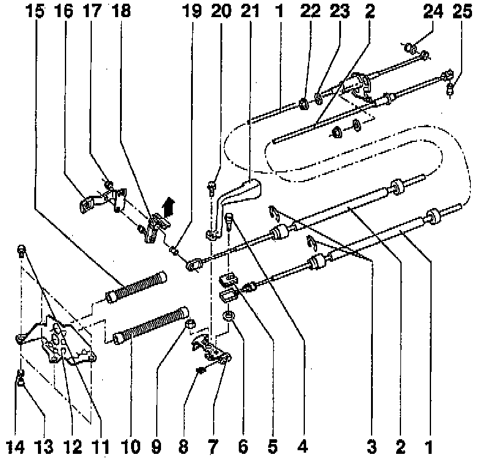

Replacement

COMPONENT NOTES AND INFORMATION
NOTE: Lubricate all mountings and contact surfaces with MoS2 grease.
1 Gear selector cable
- Installation position, refer to Overview.
2 Gate selector cable
- Pull off actuating arm -18- by pulling lug in direction indicated by-arrow
- Installation position, refer to Overview.
- Install before installing gear selector cable
3 Circlip
- Be careful to avoid damaging boot when removing
4 Hex bolt
- With shoulder
- Tighten to: 25 Nm (18 ft lb)
- Attaches gear selector cable to gear selector lever -7-
5 Rubber bushing
- For gear selector cable connection to gear selector lever -7-
- Press out of cable end piece when replacing boot
6 Washer
- Install between gear selector cable and gear selector lever -11-
7 Gear selector lever
- Fits in one position only
- Installation position, refer to Selector Lever/Relay Lever Installation Position. Service and Repair
- After installing, adjust gear selector mechanism. Adjustments
8 Square nut
- insert into gear selector lever
9 Self-locking hex nut
- For gear selector lever
- Always replace
- Tighten to: 25 Nm (18 ft lb)
10 Boot
- For gear selector cable -1-
- Carefully pull over gear selector cable end piece
- Apply MoS2 grease
11 Hex bolt
- For support bracket -12-
- Tighten to: 25 Nm (18 ft lb)
12 Support bracket
13 Spacer
14 Bushing
- For mounting support bracket to transmission
15 Boot
- For gate selector cable -2-
- Carefully pull over gear selector cable end piece
- Apply MoS2 grease
16 Relay lever
- Remove from transmission before removing clutch controls
- Installation position, refer to Selector Lever/Relay Lever. Service and Repair
17 Self-locking hex nut
- Always replace
- Tighten to: 15 Nm (11 ft lb)
- Loosen only to adjust gear selector mechanism
18 Actuating arm
- With pivot pin to mount relay lever
- Installation position, refer to Selector Lever/Relay Lever. Service and Repair
19 Rubber bushing
- For gate selector cable connection to actuating arm
- Drive out drive in with drift
20 Self-locking hex bolt
- Always replace
- Tighten to: 20 Nm (15 ft lb)
21 Balance weight
- Remove to adjusting gear selector mechanism
22 Self-locking hex nut
- For gear selector cable to selector housing
- Always replace
- Tighten to: 15 Nm (11 ft lb)
23 Rubber washer
24 Rubber bushing
- For gear selector cable connection to shift lever
- Drive out drive in with drift
25 Bushing
- For gate selector cable connection to selector bracket
- Drive out drive in with drift